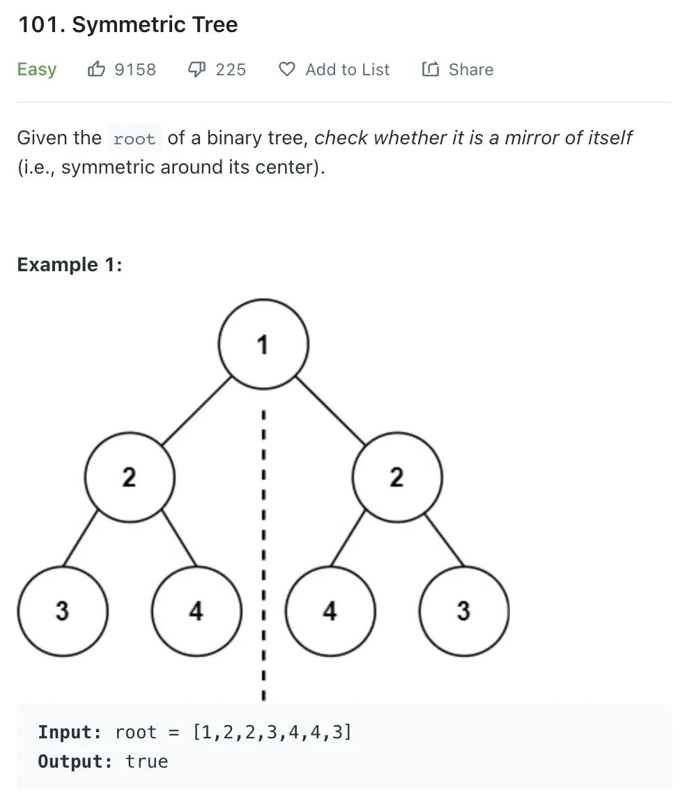
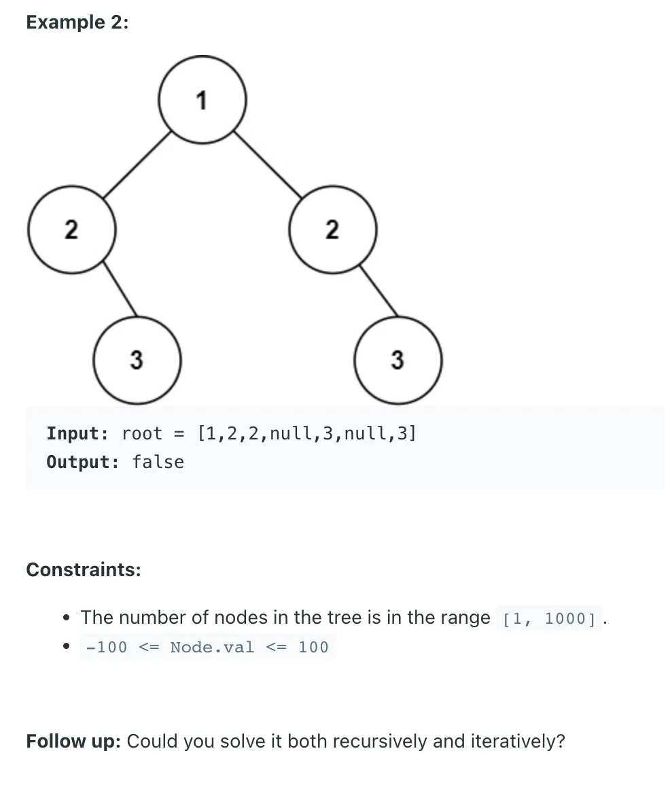

101. Symmetric Tree
考過的公司：Bytedance
Question


✍🏽 My Solution
Runtime: 0 ms, faster than 100.00% of Java online submissions for Symmetric Tree. Memory Usage: 42.8 MB, less than 16.92% of Java online submissions for Symmetric Tree.
class Solution {
public boolean isSymmetric(TreeNode root) {
if (root == null) return true;
return isMirror(root.left, root.right);
}
private boolean isMirror(TreeNode t1, TreeNode t2) {
if (t1 == null && t2 == null) {
return true;
}
if (t1 == null || t2 == null) {
return false;
}
if (t1.val != t2.val) {
return false;
}
return isMirror(t1.left, t2.right) && isMirror(t1.right, t2.left);
}
}
🧠 Thought Process
- Why did I choose this particular implementation?
- 參考力扣-遞歸解法
- 遞歸終止條件：1. 兩個節點都為空返回 true 2.只有一個節點為空返回false
- 遞歸過程
- 判斷兩個節點當前的節點是否相等
- 判斷A的的左子樹與B的右子樹是否相等
- 判斷A的的右子樹與B的左子樹是否相等
- What is the time/space complexity of my solution? How do I know?
- 假設一棵樹上n個節點
- time: O(n)
- space: O(h)
Solution #1 [Iterative - Using Stack]
Runtime: 2 ms, faster than 12.21% of Java online submissions for Symmetric Tree. Memory Usage: 42.2 MB, less than 54.90% of Java online submissions for Symmetric Tree.
class Solution {
public boolean isSymmetric(TreeNode root) {
if (root == null) return true;
Stack<TreeNode> stack = new Stack<>();
stack.push(root.left);
stack.push(root.right);
while (!stack.isEmpty()) {
TreeNode curRight = stack.pop();
TreeNode curLeft = stack.pop();
if (curLeft == null && curRight == null) {
continue;
}
if (curLeft == null || curRight == null) {
return false;
}
if (curRight.val != curLeft.val) {
return false;
}
stack.add(curLeft.left);
stack.add(curRight.right);
stack.add(curLeft.right);
stack.add(curRight.left);
}
return true;
}
}
Explanation (in my words)
- How does their solution work?
- 這個解比較好懂，就模擬遞歸的做法
- What is the space/time complexity of their solution?
- time: O(n)
- space: O(n)
Solution #2 [Iterative - Using Queue]
Runtime: 1 ms, faster than 64.31% of Java online submissions for Symmetric Tree. Memory Usage: 42.3 MB, less than 49.52% of Java online submissions for Symmetric Tree.
class Solution {
public boolean isSymmetric(TreeNode root) {
if (root == null) return true;
Queue<TreeNode> q = new LinkedList<>();
q.add(root.left);
q.add(root.right);
while (!q.isEmpty()) {
TreeNode t1 = q.poll();
TreeNode t2 = q.poll();
if (t1 == null && t2 == null) {
continue;
}
if (t1 == null || t2 == null) {
return false;
}
if (t1.val != t2.val) {
return false;
}
q.add(t1.left);
q.add(t2.right);
q.add(t1.right);
q.add(t2.left);
}
return true;
}
}
Explanation (in my words)
- What is the space/time complexity of their solution?
- time: O(n)
- space: O(n)